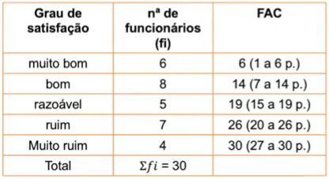

Função: dividir a distribuição ou sequência em partes iguais.
Temos quatro Medidas Separaratrizes:
- Quartil: divide a Sequência em 4 partes iguais;
- Portanto:
- Q1 = 25% - separa a sequência deixando 25% de seus
valores à esquerda e 75% de seus valores à direita;
- Q2 = 50% - separa a sequência
deixando 50% de seus valores à esquerda e 50% de seus
valores à direita;
- Q3 = 75% - separa a sequência
deixando 75% de seus valores à esquerda e 25% de seus
valores à direita;
- Q4 = 100%.
- Quintil: divide a Sequência em 5 partes iguais;
- Portanto:
- K1 = 20% - separa a sequência deixando 20% de seus
valores à esquerda e 80% de seus valores à direita;
- K2 = 40% - separa a sequência deixando 40% de seus
valores à esquerda e 60% de seus valores à direita;
- K3 = 60% - separa a sequência deixando 60% de seus
valores à esquerda e 40% de seus valores à direita;
- K4 = 80% - separa a sequência deixando 80% de seus
valores à esquerda e 20% de seus valores à direita;
- K5 = 100%.
- Decil: divide a Sequência em 10 partes iguais;
- Portanto:
- D1 = 10% - separa a sequência deixando 10% de seus
valores à esquerda e 90% de seus valores à direita;
- D2 = 20% - separa a sequência deixando 20% de seus
valores à esquerda e 80% de seus valores à direita;
- D3 = 30% - separa a sequência deixando 30% de seus
valores à esquerda e 70% de seus valores à direita;
- D4 = 40% - separa a sequência deixando 40% de seus
valores à esquerda e 60% de seus valores à direita;
- ...
- D10 = 100%.
- Porcentil: divide a Sequência em 100 partes iguais.
- Portanto:
- P1 = 1% - separa a sequência deixando 1% de seus valores
à esquerda e 99% de seus valores à direita;
- P2 = 2% - separa a sequência deixando 2% de seus valores
à esquerda e 98% de seus valores à direita;
- ...
- P83 = 83% - separa a sequência deixando 83% de seus
valores à esquerda e 17% de seus valores à direita;
- P98 = 98% - separa sequência deixando 98% de seus
valores à esquerda e 2% de seus valores à direita;
- P100 = 100%.
Exemplos:
- 1) Variável Qualitativa (nominal ou ordinal)
- A distribuição abaixo representa o grau de satisfação dos
funcionários de uma empresa. Calcule o K3.

Primeiramente devemos encontrar a posição.
K3
Posição: 60% de ∑fi
Posição 60% de 30 = 18a
K3 = razoável.
Interpretando:
- 60% dos funcionários julgaram razoável ou menos e 40% dos funcionários
julgaram razoável ou mais.
Para entender melhor a matéria, assista à vídeoaula da Professora Maria
Luísa Cervi Uzun, em seu canal no YouTube, disponível abaixo.
Para melhor fixar a matéria, resolva os exercícios da lista preparada para esta aula,
clique aqui para baixar o
arquivo.